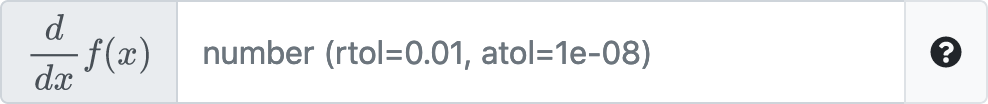

More feedback for invalid input and submissions has been added. Invalid answers are now denoted by an "invalid" badge next to the field.
Clicking on the more obvious Why button will give more information on why the answer couldn't be parsed, including some example answers that are valid and invalid.
By default, students now have the ability to express answers as fractions for pl-number-input fields. For example, the following is now valid:
 This can be enabled or disabled using the
This can be enabled or disabled using the allow-fractions attribute.
Previously, students could run into render errors if questions have been changed (notably if elements were added or modifed) after answers were submitted. This has been fixed and students are now shown a "Missing Input" badge in the answers panel.
Inputs with "tall" labels will also now correctly scale. 